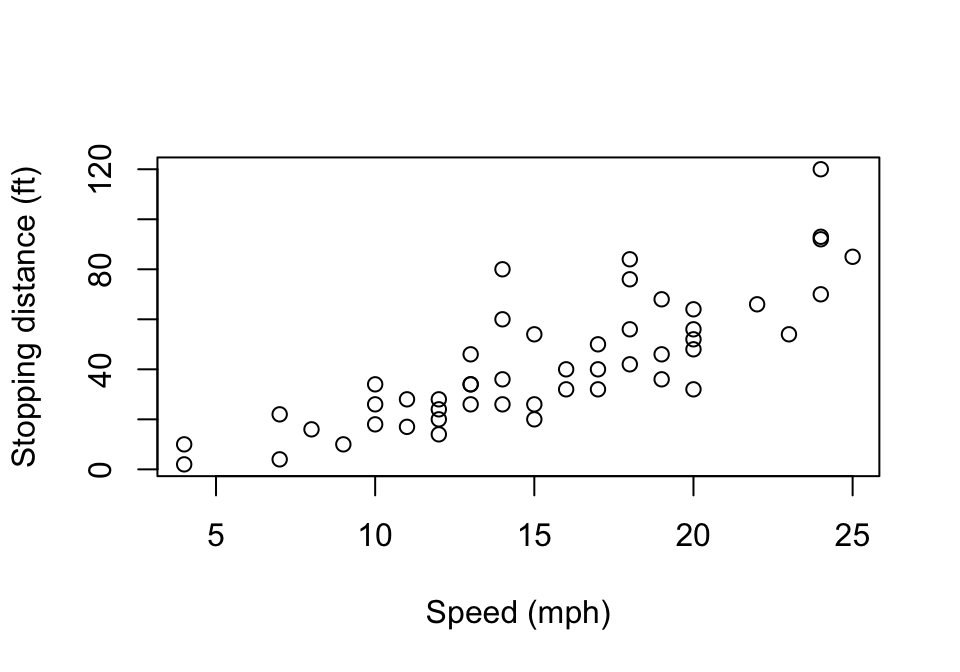

speed dist
1 4 2
2 4 10
3 7 4
4 7 22
5 8 16
6 9 10Template for Quarto reports
Resources:
https://r4ds.hadley.nz/quarto
https://quarto.org/docs/guide/
https://quarto.org/docs/authoring/markdown-basics.html
This short template demonstrates the useful features of Quarto you’ll need to write reproducible reports. You should read the Qmd source file and also use the Render button to see what it looks like in PDF.
Quarto has a comprehensive manual online.
Text formatting
As you can see above, # indicates a top-level section header. Subsection headers can be made with ##, sub-subsections with ###, and so on. These are automatically numbered. We can also assign labels to sections, subsections, and so on, and refer to them by number; for instance, Section 2 below describes how to include R code. To be able to refer to a section, give it a label using the {#sec-label} syntax on the same line as the header.
Text can be bolded with double asterisks and italicized with single asterisks. Monospace text, such as for short code snippets, uses backticks. (Note these are different from quotation marks or apostrophes.) Links are written like this.
Bulleted lists can be written with asterisks:
- Each item starts on a new line with an asterisk.
- Items should start on the beginning of the line.
- Leave blank lines after the end of the list so the list does not continue.
Mathematics can be written with LaTeX syntax using dollar signs. For instance, using single dollar signs we can write inline math: \((-b \pm \sqrt{b^2 - 4ac})/2a\).
To write math in “display style”, i.e. displayed on its own line centered on the page, we use double dollar signs: \[
N(A) = \int_A \lambda(t) \, dt.
\] (Notice how I used \, to put a space between the integrand and the differential. Notice also that I left no blank lines before and after the equation, since blank lines create new paragraphs that are hence indented.)
Code blocks
Code blocks are evaluated sequentially when you hit Render. As the code runs, R prints out which block is running, so naming blocks is useful if you want to know which one takes a long time. After the block name, you can specify chunk options. For example, echo controls whether the code is printed in the document. By default, output is printed in the document in monospace:
Chunk options can also be written inside the code block as YAML, which is helpful for really long options, as we’ll see soon.
speed dist
1 4 2
2 4 10
3 7 4
4 7 22
5 8 16
6 9 10Code often prints out irrelevant output we don’t want to include. For instance, many packages print out “helpful” messages when they’re loaded. We usually want to suppress these so they don’t appear in the finalized report. There are a few ways to do this.
For package startup messages, we can suppress them individually without suppressing other output:
suppressPackageStartupMessages(library(ggplot2))
2 + 2[1] 4Note the output appears but not the normal ggplot2 message.
To hide all warnings, use the warning option:
warning("This is an example warning!")To hide messages printed with message(), use the message option:
message("This is an example message")To hide all text output, including things printed with cat() or print(), use the results option:
cat("foobar\n")Inline code
Sometimes it’s useful to embed the output of R code into the middle of the paragraph. For instance, suppose you have code that calculates an MSE:
mse <- 71243.2451To embed this in text, we can use backticks in a special way. For instance, I can embed this number like so: 7.1243245^{4}. Note how it’s automatically formatted.
The prettyNum() function can be very useful. It allows you to print numbers with commas (for thousands separators) and with a limited number of significant digits: 71,243.2.
Figures
If a code block produces a plot or figure, this figure will automatically be inserted inline in the report. That is, it will be inserted exactly where the code block is. This is not what we normally want. We normally want plots to be in figures, i.e. to appear at the top of bottom of the printed page with a caption, figure number, and so on. We can do this with the right options.

We can refer to this figure in the text by its number. For instance, we can write this: Figure 1 illustrates the relationship between car speed and stopping distance.
The @ref syntax tells Quarto to insert the reference. We write @fig-with-caption to indicate it’s a figure and produced by the code block named fig-with-caption. The code block name must begin with fig- so Quarto knows to refer to it by “Figure N”, rather than “Table N” or some other prefix.
Notice the use of fig.width and fig.height to control the figure’s size (in inches). These control the sizes given to R when it generates the plot, so R proportionally adjusts the font sizes to be large enough.
Models
We can summarize model results with a table. For instance, suppose we fit a couple linear regression models:
model1 <- lm(mpg ~ disp + hp + drat, data = mtcars)
model2 <- lm(mpg ~ disp + hp + drat + qsec, data = mtcars)It is not appropriate to simply print summary(model1) into the report. If we want the reader to understand what models we have fit and what their results are, we should provide a nicely formatted table. Packages such as texreg can do this, although they do not integrate with Quarto very well. A simpler option is to use broom::tidy() to get a data frame of the model fit, and simply report that as a table. Table 1 shows the results. To show multiple models at once, you can use dplyr::full_join() to pull together the tidied models and rearrange the columns as you desire.
| Term | Estimate | SE | t | p |
|---|---|---|---|---|
| (Intercept) | 19.34 | 6.37 | 3.04 | 0.01 |
| disp | -0.02 | 0.01 | -2.05 | 0.05 |
| hp | -0.03 | 0.01 | -2.34 | 0.03 |
| drat | 2.71 | 1.49 | 1.83 | 0.08 |
Sadly this table does not float, i.e. it appears exactly where we put it instead of going to the top or bottom of the page; this causes some strange page layouts but appears to be unavoidable without contorted code.